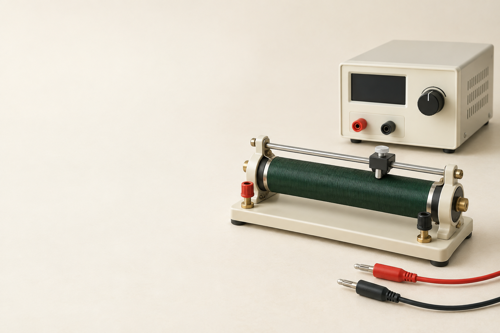

中2 理科・物理電流と電圧の
電流と電圧の
関係

中2 理科 電流と電圧の関係SeeD EDUCATION
抵抗器に、電圧をかける
回路に入れる器具抵抗器
電圧を変えながら流れる電流を測る
同じ抵抗器を使って変化を比べる
中2 理科 電流と電圧の関係SeeD EDUCATION
Aは途中、Vは両端へ
電流計抵抗器と直列
電圧計抵抗器と並列
変えるもの抵抗器にかかる電圧
中2 理科 電流と電圧の関係SeeD EDUCATION
電圧を上げると、どうなる？
電圧を1.0 Vにする電流は0.10 A
電圧を2.0 Vにする電流は0.20 A
電圧を3.0 Vにする電流は0.30 A
中2 理科 電流と電圧の関係SeeD EDUCATION
電圧と電流を、並べてみる
電圧が2倍になると電流も2倍
電圧が3倍になると電流も3倍
同じ抵抗器では割合がそろっている
中2 理科 電流と電圧の関係SeeD EDUCATION
測った値を、点で打つ
横軸は電圧、縦軸は電流1.0 V と 0.10 A
次の測定値2.0 V と 0.20 A
最後の測定値3.0 V と 0.30 A
中2 理科 電流と電圧の関係SeeD EDUCATION
原点を通る、一直線
点の並びを見ると原点を通る直線
電流は、電圧に比例する
この関係をオームの法則
中2 理科 電流と電圧の関係SeeD EDUCATION
同じ電圧でも、電流は同じ？
抵抗器Aに2.0 V0.20 A
抵抗器Bに2.0 V0.10 A
電流が小さいのは抵抗器B
中2 理科 電流と電圧の関係SeeD EDUCATION
Bの電圧も、変えてみる
電圧1.0 V電流0.05 A
電圧2.0 V電流0.10 A
電圧3.0 V電流0.15 A
中2 理科 電流と電圧の関係SeeD EDUCATION
グラフの傾きが、ちがう
同じ2.0 Vで比べるAは0.20 A、Bは0.10 A
流れにくいのはBの抵抗器
この軸の取り方では傾きが小さい方が流れにくい
中2 理科 電流と電圧の関係SeeD EDUCATION
通りにくくすると、流れる量は？
ポンプのはたらきは同じ狭い部分を、もっと通りにくくする
同じ時間に通る水の量は少なくなる
電気の回路でも、同じ電圧なら抵抗が大きいほど、電流は小さい
中2 理科 電流と電圧の関係SeeD EDUCATION
電気抵抗とは？
電流の流れにくさ電気抵抗（抵抗）
同じ電圧をかけたとき電流が小さいほど抵抗が大きい
抵抗の単位Ω（オーム）
中2 理科 電流と電圧の関係SeeD EDUCATION
1 Ωは、どんな抵抗？
1 Vをかけたとき1 Aが流れる
この抵抗の大きさが1 Ω
中2 理科 電流と電圧の関係SeeD EDUCATION
電圧を電流で割ってみる
抵抗器A2.0 ÷ 0.20 = 10
抵抗器B2.0 ÷ 0.10 = 20
抵抗は電圧 ÷ 電流
中2 理科 電流と電圧の関係SeeD EDUCATION
電圧・電流・抵抗の関係
抵抗〔Ω〕電圧〔V〕÷ 電流〔A〕
電流〔A〕電圧〔V〕÷ 抵抗〔Ω〕
電圧〔V〕電流〔A〕× 抵抗〔Ω〕
中2 理科 電流と電圧の関係SeeD EDUCATION
4.0 Vで、0.20 A。何Ω？
求めるのは抵抗電圧 ÷ 電流
数値を入れる4.0 ÷ 0.20
抵抗20 Ω
中2 理科 電流と電圧の関係SeeD EDUCATION
20 Ωに、6.0 Vをかける
求めるのは電流電圧 ÷ 抵抗
数値を入れる6.0 ÷ 20
電流0.30 A
中2 理科 電流と電圧の関係SeeD EDUCATION
15 Ωに、0.20 A流れる
求めるのは電圧電流 × 抵抗
数値を入れる0.20 × 15
電圧3.0 V
中2 理科 電流と電圧の関係SeeD EDUCATION
200 mAを、そのまま使わない
電流をAに直す200 mA = 0.200 A
電圧が3.0 Vなら3.0 ÷ 0.200
抵抗は15 Ω
中2 理科 電流と電圧の関係SeeD EDUCATION
2.5 Vのとき、何A流れる？
横軸の2.5 Vから直線までたどる
縦軸へたどると0.25 A
この抵抗器の抵抗は2.5 ÷ 0.25 = 10 Ω
中2 理科 電流と電圧の関係SeeD EDUCATION
軸が逆なら、見え方も変わる
今度は横軸が電流縦軸が電圧
同じ0.10 Aで比べるAは1.0 V、Bは2.0 V
この軸の取り方では傾きが大きいBが高抵抗
中2 理科 電流と電圧の関係SeeD EDUCATION
温度が変わると、抵抗も変わる
抵抗器に長く電流を流すと温度が上がる
今回の比較では温度をほぼ一定にする
豆電球などでは電流と電圧が比例しないこともある
中2 理科 電流と電圧の関係SeeD EDUCATION
流れやすい物質、流れにくい物質
銅などの金属電流が流れやすい導体
ゴム・プラスチックなど電流が流れにくい不導体
導線のまわりの被覆電流を外へ流しにくくする
中2 理科 電流と電圧の関係SeeD EDUCATION
通りにくい部分を、続けて通る
左は1か所、右は2か所右は、ゆっくり流れる
右を、さらに3か所にするともっと、ゆっくり流れる
途中で水が減るわけではない1本の管の、どこでも流量は同じ
抵抗器を直列につなぐと全体の抵抗が大きくなる
中2 理科 電流と電圧の関係SeeD EDUCATION
直列では、流れにくさは？
10 Ωと20 Ωを直列にする道すじは1本
電流は、どちらにも同じ大きさで流れる
中2 理科 電流と電圧の関係SeeD EDUCATION
全体を、1つの抵抗として考える
直列の全抵抗10 ＋ 20
合わせた抵抗は30 Ω
流れる電流は6.0 ÷ 30 = 0.20 A
中2 理科 電流と電圧の関係SeeD EDUCATION
電圧は、どう分かれる？
10 Ωの両端0.20 × 10 = 2.0 V
20 Ωの両端0.20 × 20 = 4.0 V
2つを足すと2.0 ＋ 4.0 = 6.0 V
中2 理科 電流と電圧の関係SeeD EDUCATION
直列回路は、抵抗を足す
全抵抗各抵抗の和
電流どの部分でも同じ
電圧各部分の和が全体
中2 理科 電流と電圧の関係SeeD EDUCATION
通り道が増えると、流れやすい
同じ通りにくさの道を1本から、2本へ
同じポンプのはたらきなら全体を流れる水の量が増える
抵抗器を並列につなぐと全体の抵抗が小さくなる
中2 理科 電流と電圧の関係SeeD EDUCATION
並列では、道が増える
10 Ωと20 Ωを並列にする道すじが2本になる
それぞれの抵抗器には同じ2.0 Vがかかる
中2 理科 電流と電圧の関係SeeD EDUCATION
それぞれの枝には、何A？
10 Ωの枝2.0 ÷ 10 = 0.20 A
20 Ωの枝2.0 ÷ 20 = 0.10 A
全体の電流0.20 ＋ 0.10 = 0.30 A
中2 理科 電流と電圧の関係SeeD EDUCATION
全体の電圧を、全体の電流で割る
全体を1つとして考える2.0 ÷ 0.30
全抵抗約6.7 Ω
各抵抗と比べると10 Ωよりも小さい
中2 理科 電流と電圧の関係SeeD EDUCATION
逆数の和で、表せる
各枝の電流の和から1/R = 1/R₁ ＋ 1/R₂
10 Ωと20 Ωなら1/10 ＋ 1/20 = 3/20
逆数を戻すとR = 20/3 ≒ 6.7 Ω
中2 理科 電流と電圧の関係SeeD EDUCATION
20 Ωを2本にすると？
同じ電圧で、道が2本全体の電流は2倍
全抵抗は20 ÷ 2 = 10 Ω
中2 理科 電流と電圧の関係SeeD EDUCATION
直列回路の、電流と電圧を求める
全抵抗5 ＋ 15 = 20 Ω
回路の電流8.0 ÷ 20 = 0.40 A
15 Ωの両端の電圧0.40 × 15 = 6.0 V
中2 理科 電流と電圧の関係SeeD EDUCATION
並列回路の、電流と全抵抗を求める
20 Ωの枝の電流6.0 ÷ 20 = 0.30 A
30 Ωの枝の電流6.0 ÷ 30 = 0.20 A
全体の抵抗6.0 ÷ 0.50 = 12 Ω
中2 理科 電流と電圧の関係SeeD EDUCATION
電圧・電流・抵抗は、同じ部分で
回路全体を考えるなら全体のV・I・Rを使う
1つの抵抗器を考えるならその抵抗器のV・I・Rを使う
中2 理科 電流と電圧の関係SeeD EDUCATION
測定結果から、回路を読める
同じ抵抗器・温度がほぼ一定なら電流は電圧に比例する
抵抗の求め方電圧 ÷ 電流
全体の抵抗直列は大きく、並列は小さく
中2 理科 電流と電圧の関係SeeD EDUCATION